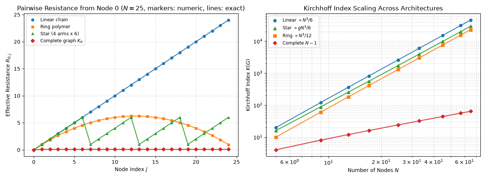
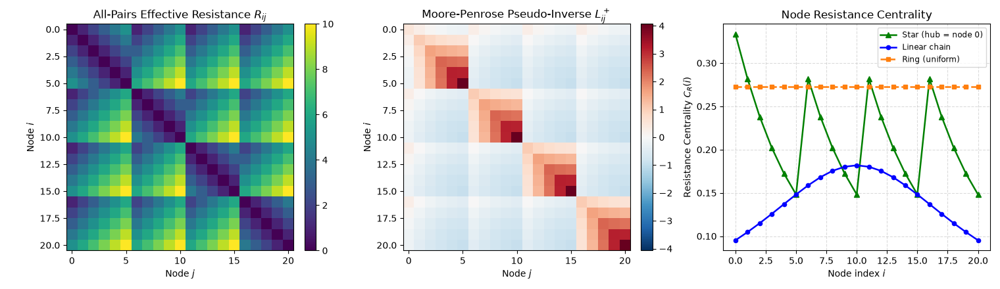
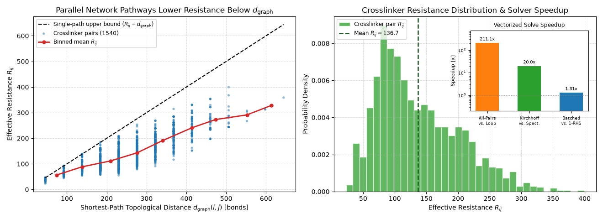

Note
Go to the end to download the full example code.
Topological Resistance Distance & Commute Time Analysis¶
This example demonstrates how to use
ResistanceDistanceAnalysis to analyze the
connectivity, effective resistances, Kirchhoff index, random-walk commute
times, and node resistance centrality of polymer architectures and crosslinked
networks.
Given the scalar graph Laplacian \(\mathbf{L} = \mathbf{D} - \mathbf{W}\) of a weighted spring network (with total edge weight \(M = \frac{1}{2}\operatorname{Tr}(\mathbf{L})\)), the effective resistance \(R_{ij}\) between nodes \(i\) and \(j\) satisfies
where \(\mathbf{L}^+\) is the Moore-Penrose pseudo-inverse of \(\mathbf{L}\). In polymer physics, \(R_{ij}\) equals the normalized equilibrium mean-squared distance between beads \(i\) and \(j\) in a phantom Gaussian network, while the Kirchhoff index \(K(G) = \sum_{i < j} R_{ij} = N \operatorname{Tr}(\mathbf{L}^+)\) determines the equilibrium radius of gyration \(\langle R_g^2 \rangle_{\text{eq}} \propto K(G) / N^2\).
from collections import deque
from pathlib import Path
import time
import matplotlib.pyplot as plt
import numpy as np
import pandas as pd
from pylimer_tools.io.read_lammps_output_file import read_data_file
from pylimer_tools_cpp import ResistanceDistanceAnalysis, Universe
Canonical Polymer Architectures & Analytical Verification¶
We construct linear chains, rings, regular stars, and complete graphs via
the factory methods of ResistanceDistanceAnalysis
and verify both pairwise effective resistances \(R_{0, j}\) and the
Kirchhoff index \(K(G)\) against closed-form analytical expressions.
def _star_kirchhoff_analytical(num_arms: int, arm_length: int) -> float:
"""Exact Kirchhoff index for a regular star tree (sum of subtree products)."""
n_nodes = 1 + num_arms * arm_length
edge_contrib = sum(s * (n_nodes - s) for s in range(1, arm_length + 1))
return float(num_arms * edge_contrib)
n_demo = 25
arm_len_demo = 6 # 1 + 4 * 6 = 25 nodes
num_arms_demo = 4
chain_rda = ResistanceDistanceAnalysis.create_linear_chain(n_demo)
ring_rda = ResistanceDistanceAnalysis.create_ring(n_demo)
star_rda = ResistanceDistanceAnalysis.create_star(
num_arms=num_arms_demo, arm_length=arm_len_demo
)
complete_rda = ResistanceDistanceAnalysis.create_complete(n_demo)
# Inspect graph topology metadata
arch_rows = []
for name, rda in (
("Linear chain", chain_rda),
("Ring polymer", ring_rda),
(f"Star ({num_arms_demo} arms x {arm_len_demo})", star_rda),
("Complete graph K_N", complete_rda),
):
k_fast = rda.compute_kirchhoff_index()
k_spec = rda.compute_kirchhoff_index_spectral()
l_plus = rda.compute_moore_penrose_pseudo_inverse()
k_trace = rda.get_nr_of_nodes() * float(np.trace(l_plus))
arch_rows.append(
{
"Architecture": name,
"Nodes": rda.get_nr_of_nodes(),
"Edges": rda.get_nr_of_edges(),
"Total Weight": f"{rda.get_total_edge_weight():.1f}",
"Connected": rda.is_connected(),
"Components": rda.get_nr_of_connected_components(),
"K(G) [Fast]": f"{k_fast:.4f}",
"K(G) [Spectral]": f"{k_spec:.4f}",
"N*Tr(L+)": f"{k_trace:.4f}",
}
)
print(pd.DataFrame(arch_rows).to_string(index=False))
# Compare pairwise R_{0, j} against analytical predictions at N = 25
nodes = np.arange(n_demo)
r0_chain_num = np.array(
[chain_rda.compute_effective_resistance(0, int(j)) for j in nodes]
)
r0_ring_num = np.array(
[ring_rda.compute_effective_resistance(0, int(j)) for j in nodes]
)
r0_star_num = np.array(
[star_rda.compute_effective_resistance(0, int(j)) for j in nodes]
)
r0_comp_num = np.array(
[complete_rda.compute_effective_resistance(0, int(j)) for j in nodes]
)
r0_chain_exact = nodes.astype(float)
r0_ring_exact = nodes * (n_demo - nodes) / float(n_demo)
r0_star_exact = np.array(
[0.0] + [float(((j - 1) % arm_len_demo) + 1) for j in range(1, n_demo)]
)
r0_comp_exact = np.where(nodes == 0, 0.0, 2.0 / float(n_demo))
# Verify Kirchhoff index scaling & Zimm-Stockmayer contraction factor g = K / K_linear
arm_lengths_sweep = np.array([1, 2, 3, 4, 6, 8, 11, 14, 16])
n_sweep = 1 + num_arms_demo * arm_lengths_sweep
k_chain_num, k_ring_num, k_star_num, k_comp_num = [], [], [], []
k_chain_exact, k_ring_exact, k_star_exact, k_comp_exact = [], [], [], []
for m_len, n_val in zip(arm_lengths_sweep, n_sweep):
n_int = int(n_val)
k_chain_num.append(
ResistanceDistanceAnalysis.create_linear_chain(n_int).compute_kirchhoff_index()
)
k_ring_num.append(
ResistanceDistanceAnalysis.create_ring(n_int).compute_kirchhoff_index()
)
k_star_num.append(
ResistanceDistanceAnalysis.create_star(
num_arms_demo, int(m_len)
).compute_kirchhoff_index()
)
k_comp_num.append(
ResistanceDistanceAnalysis.create_complete(n_int).compute_kirchhoff_index()
)
k_chain_exact.append(float(n_int * (n_int * n_int - 1)) / 6.0)
k_ring_exact.append(float(n_int * n_int * n_int - n_int) / 12.0)
k_star_exact.append(_star_kirchhoff_analytical(num_arms_demo, int(m_len)))
k_comp_exact.append(float(n_int - 1))
g_ring = k_ring_num[-1] / k_chain_num[-1]
g_star = k_star_num[-1] / k_chain_num[-1]
g_star_asymp = (3.0 * num_arms_demo - 2.0) / float(num_arms_demo**2)
print(
f"\nZimm-Stockmayer g-factor at N={int(n_sweep[-1])}: "
f"Ring g={g_ring:.4f} (exact 0.5000), "
f"4-Arm Star g={g_star:.4f} (asymptotic limit (3f-2)/f^2={g_star_asymp:.4f})"
)
fig, (ax1, ax2) = plt.subplots(1, 2, figsize=(13.0, 4.8))
for label, num_vals, exact_vals, color, marker in (
("Linear chain", r0_chain_num, r0_chain_exact, "#1f77b4", "o"),
("Ring polymer", r0_ring_num, r0_ring_exact, "#ff7f0e", "s"),
(
f"Star ({num_arms_demo} arms x {arm_len_demo})",
r0_star_num,
r0_star_exact,
"#2ca02c",
"^",
),
("Complete graph $K_N$", r0_comp_num, r0_comp_exact, "#d62728", "D"),
):
ax1.plot(nodes, exact_vals, "-", color=color, linewidth=1.8, alpha=0.85)
ax1.plot(
nodes,
num_vals,
marker,
color=color,
markersize=5,
linestyle="none",
label=label,
)
ax1.set_xlabel("Node index $j$")
ax1.set_ylabel("Effective Resistance $R_{0, j}$")
ax1.set_title(
f"Pairwise Resistance from Node 0 ($N = {n_demo}$, markers: numeric, lines: exact)"
)
ax1.grid(True, linestyle="--", alpha=0.45)
ax1.legend(frameon=True, fontsize=8.5)
for label, k_num, k_ex, color, marker in (
("Linear $\\propto N^3/6$", k_chain_num, k_chain_exact, "#1f77b4", "o"),
("Star $\\propto g N^3/6$", k_star_num, k_star_exact, "#2ca02c", "^"),
("Ring $\\propto N^3/12$", k_ring_num, k_ring_exact, "#ff7f0e", "s"),
("Complete $N - 1$", k_comp_num, k_comp_exact, "#d62728", "D"),
):
ax2.loglog(n_sweep, k_ex, "-", color=color, linewidth=1.8, alpha=0.85)
ax2.loglog(
n_sweep,
k_num,
marker,
color=color,
markersize=5.5,
linestyle="none",
label=label,
)
ax2.set_xlabel("Number of Nodes $N$")
ax2.set_ylabel("Kirchhoff Index $K(G)$")
ax2.set_title("Kirchhoff Index Scaling Across Architectures")
ax2.grid(True, which="both", linestyle="--", alpha=0.45)
ax2.legend(frameon=True, fontsize=8.5)
plt.tight_layout()
plt.show()

Architecture Nodes Edges Total Weight Connected Components K(G) [Fast] K(G) [Spectral] N*Tr(L+)
Linear chain 25 24 24.0 True 1 2600.0000 2600.0000 2600.0000
Ring polymer 25 25 25.0 True 1 1300.0000 1300.0000 1300.0000
Star (4 arms x 6) 25 24 24.0 True 1 1736.0000 1736.0000 1736.0000
Complete graph K_N 25 300 300.0 True 1 24.0000 24.0000 24.0000
Zimm-Stockmayer g-factor at N=65: Ring g=0.5000 (exact 0.5000), 4-Arm Star g=0.6420 (asymptotic limit (3f-2)/f^2=0.6250)
Node Centrality, Commute Times & Moore-Penrose Pseudo-Inverse¶
On a star polymer (\(f = 4\) arms of length \(M = 5\), \(N = 21\)), we inspect the full all-pairs effective resistance matrix \(\mathbf{R}\), the Moore-Penrose pseudo-inverse \(\mathbf{L}^+\), the pinned Laplacian solve \(\mathbf{L}_{\text{pinned}} \mathbf{X} = \mathbf{I}\), random-walk commute times \(C_{ij} = 2 M R_{ij}\), and node resistance centralities \(C_R(i) = (N - 1) / \sum_{j \neq i} R_{ij}\).
n_cent = 21
star_cent = ResistanceDistanceAnalysis.create_star(num_arms=4, arm_length=5)
chain_cent = ResistanceDistanceAnalysis.create_linear_chain(n_cent)
ring_cent = ResistanceDistanceAnalysis.create_ring(n_cent)
R_star = star_cent.compute_all_pairs_effective_resistance(chunk_size=8)
C_star = star_cent.compute_all_pairs_commute_time(chunk_size=8)
L_star = star_cent.get_laplacian().toarray()
L_pinned_star = star_cent.get_pinned_laplacian().toarray()
X_pinned = star_cent.solve_identity_chunked(chunk_size=8)
L_plus_star = star_cent.compute_moore_penrose_pseudo_inverse(chunk_size=8)
# Verify Moore-Penrose axioms, pinned linear system, and commute-time identity
mp_residual = float(np.linalg.norm(L_star @ L_plus_star @ L_star - L_star))
null_proj_residual = float(np.linalg.norm(L_plus_star @ np.ones(n_cent)))
pinned_solve_err = float(np.linalg.norm(L_pinned_star @ X_pinned - np.eye(n_cent)))
commute_0_5 = star_cent.compute_commute_time(0, 5)
commute_max_diff = float(
np.max(np.abs(C_star - 2.0 * star_cent.get_total_edge_weight() * R_star))
)
tot_res_star = star_cent.compute_total_resistance_per_node(chunk_size=8)
row_sum_diff = float(np.max(np.abs(tot_res_star - R_star.sum(axis=1))))
print(
f"\nStar polymer (N={n_cent}) matrix checks:\n"
f" ||L L+ L - L||_F = {mp_residual:.2e}\n"
f" ||L+ 1||_2 = {null_proj_residual:.2e}\n"
f" ||L_pinned X - I||_F = {pinned_solve_err:.2e}\n"
f" max |C - 2*M*R| = {commute_max_diff:.2e} (C(0,5) = {commute_0_5:.1f} steps)\n"
f" max |tot_res - rowsum(R)| = {row_sum_diff:.2e}"
)
cent_star = star_cent.compute_resistance_centrality()
cent_chain = chain_cent.compute_resistance_centrality()
cent_ring = ring_cent.compute_resistance_centrality()
fig, (ax1, ax2, ax3) = plt.subplots(1, 3, figsize=(15.2, 4.4))
im1 = ax1.imshow(R_star, cmap="viridis", origin="upper")
ax1.set_title("All-Pairs Effective Resistance $R_{ij}$")
ax1.set_xlabel("Node $j$")
ax1.set_ylabel("Node $i$")
fig.colorbar(im1, ax=ax1, fraction=0.046, pad=0.04)
vlim = float(np.max(np.abs(L_plus_star)))
im2 = ax2.imshow(L_plus_star, cmap="RdBu_r", vmin=-vlim, vmax=vlim, origin="upper")
ax2.set_title(r"Moore-Penrose Pseudo-Inverse $L^+_{ij}$")
ax2.set_xlabel("Node $j$")
ax2.set_ylabel("Node $i$")
fig.colorbar(im2, ax=ax2, fraction=0.046, pad=0.04)
idx_cent = np.arange(n_cent)
ax3.plot(
idx_cent,
cent_star,
"g^-",
linewidth=1.8,
markersize=5.5,
label="Star (hub = node 0)",
)
ax3.plot(
idx_cent, cent_chain, "bo-", linewidth=1.8, markersize=4.5, label="Linear chain"
)
ax3.plot(
idx_cent,
cent_ring,
"s--",
color="#ff7f0e",
linewidth=1.8,
markersize=4.5,
label="Ring (uniform)",
)
ax3.set_xlabel("Node index $i$")
ax3.set_ylabel("Resistance Centrality $C_R(i)$")
ax3.set_title("Node Resistance Centrality")
ax3.grid(True, linestyle="--", alpha=0.45)
ax3.legend(frameon=True, fontsize=8.5)
plt.tight_layout()
plt.show()

Star polymer (N=21) matrix checks:
||L L+ L - L||_F = 9.67e-15
||L+ 1||_2 = 5.67e-15
||L_pinned X - I||_F = 0.00e+00
max |C - 2*M*R| = 0.00e+00 (C(0,5) = 200.0 steps)
max |tot_res - rowsum(R)| = 0.00e+00
Weighted Springs, Parallel Loops & Disconnected Polymer Networks¶
ResistanceDistanceAnalysis also handles weighted
edges (different strand spring constants \(k_e = w_e\)), parallel bonds,
direct sparse Laplacian matrices via
from_matrix(), and
disconnected multi-component systems where inter-component resistances are
infinite.
# 1. Parallel and series weighted springs (0 --(w1=1, w2=3)-- 1 --(w3=2)-- 2)
weighted_rda = ResistanceDistanceAnalysis(
spring_from=[0, 0, 1],
spring_to=[1, 1, 2],
weights=[1.0, 3.0, 2.0],
num_nodes=3,
)
# Construct an identical instance via from_matrix on its sparse Laplacian
weighted_from_mat = ResistanceDistanceAnalysis.from_matrix(weighted_rda.get_laplacian())
r_01 = weighted_rda.compute_effective_resistance(0, 1) # 1 / (1 + 3) = 0.25
r_12 = weighted_rda.compute_effective_resistance(1, 2) # 1 / 2 = 0.50
r_02 = weighted_from_mat.compute_effective_resistance(0, 2) # 0.25 + 0.50 = 0.75
print(
f"\nWeighted parallel+series springs: "
f"R_01 = {r_01:.4f} (exact 0.2500), "
f"R_12 = {r_12:.4f} (exact 0.5000), "
f"R_02 (from_matrix) = {r_02:.4f} (exact 0.7500)"
)
# 2. Disconnected network:
# Component 0: 4-node cycle with diagonal cross-bond (nodes 0..3)
# Component 1: soluble dimer (nodes 4, 5)
# Component 2: soluble trimer (nodes 6, 7, 8)
# Component 3: isolated monomer (node 9)
disc_from = [0, 1, 2, 3, 0, 4, 6, 7]
disc_to = [1, 2, 3, 0, 2, 5, 7, 8]
disc_rda = ResistanceDistanceAnalysis(disc_from, disc_to, num_nodes=10)
disc_comps = disc_rda.get_connected_components()
print(
f"Disconnected graph: is_connected={disc_rda.is_connected()}, "
f"components={disc_rda.get_nr_of_connected_components()} -> {disc_comps}"
)
disc_pairs = [(0, 2), (0, 1), (4, 5), (6, 8), (0, 4), (4, 9)]
disc_res = disc_rda.compute_effective_resistance_batched(disc_pairs)
for (u, v), val in zip(disc_pairs, disc_res):
print(f" Pair ({u}, {v}): R = {val}")
Weighted parallel+series springs: R_01 = 0.2500 (exact 0.2500), R_12 = 0.5000 (exact 0.5000), R_02 (from_matrix) = 0.7500 (exact 0.7500)
Disconnected graph: is_connected=False, components=4 -> [[0, 1, 2, 3], [4, 5], [6, 7, 8], [9]]
Pair (0, 2): R = 0.5
Pair (0, 1): R = 0.625
Pair (4, 5): R = 1.0
Pair (6, 8): R = 2.0
Pair (0, 4): R = inf
Pair (4, 9): R = inf
Crosslinked Polymer Network (Universe) & Batched / Level-3 BLAS Performance¶
Finally, we load an equilibrated bead-spring polymer network from a LAMMPS
structure file, construct ResistanceDistanceAnalysis
via from_universe(),
compare effective resistance against shortest-path bond distance between
crosslinkers, and benchmark multi-RHS batching and Level-3 BLAS chunked
solves.
def _find_fixtures_dir() -> Path:
for cur in (
[Path(__file__).resolve().parent] if "__file__" in globals() else []
) + [Path.cwd()]:
for p in [cur] + list(cur.parents):
candidate = p / "tests" / "pylimer_tools" / "fixtures"
if candidate.is_dir():
return candidate
return Path("tests/pylimer_tools/fixtures").resolve()
_fixtures_dir = _find_fixtures_dir()
universe = read_data_file(
str(_fixtures_dir / "structure/network_100_a_46.structure.out")
)
assert isinstance(universe, Universe)
net_rda = ResistanceDistanceAnalysis.from_universe(universe)
components = net_rda.get_connected_components()
largest_comp = max(components, key=len)
largest_set = set(largest_comp)
print(
f"\nLoaded polymer network: {net_rda.get_nr_of_nodes()} atoms, "
f"{net_rda.get_nr_of_edges()} bonds, "
f"{net_rda.get_nr_of_connected_components()} connected components "
f"(largest: {len(largest_comp)} atoms)."
)
# Extract crosslinker vertex indices (atom type 2) in the percolating component
xl_vertices = sorted(
universe.get_vertex_idx_by_atom_id(atom.get_id())
for atom in universe.get_atoms_by_type(2)
if universe.get_vertex_idx_by_atom_id(atom.get_id()) in largest_set
)
# Build sparse unweighted adjacency list from Universe edges for BFS distances
edges = universe.get_edges()
adj: list[list[int]] = [[] for _ in range(net_rda.get_nr_of_nodes())]
for u, v in zip(edges["edge_from"], edges["edge_to"]):
if u != v:
adj[u].append(v)
adj[v].append(u)
xl_pairs: list[tuple[int, int]] = []
graph_distances: list[int] = []
for idx_a, src in enumerate(xl_vertices):
# Single-source BFS to collect shortest-path topological distance to later XLs
dist = [-1] * net_rda.get_nr_of_nodes()
dist[src] = 0
queue: deque[int] = deque([src])
while queue:
curr = queue.popleft()
next_d = dist[curr] + 1
for nxt in adj[curr]:
if dist[nxt] == -1:
dist[nxt] = next_d
queue.append(nxt)
for dst in xl_vertices[idx_a + 1 :]:
xl_pairs.append((src, dst))
graph_distances.append(dist[dst])
graph_dist_arr = np.asarray(graph_distances, dtype=float)
# Warm up LDLT factorization so timing compares back-substitution cost fairly
_ = net_rda.get_pinned_laplacian()
# Benchmark batched multi-RHS solve vs individual pairwise solves
t0 = time.perf_counter()
r_batched = net_rda.compute_effective_resistance_batched(xl_pairs)
t_batched = time.perf_counter() - t0
t0 = time.perf_counter()
r_single = np.array([net_rda.compute_effective_resistance(u, v) for u, v in xl_pairs])
t_single = time.perf_counter() - t0
batched_speedup = t_single / max(t_batched, 1e-9)
print(
f"Evaluated {len(xl_pairs)} crosslinker pairs ({len(xl_vertices)} crosslinkers):\n"
f" Individual solves: {t_single * 1e3:.2f} ms\n"
f" Batched multi-RHS: {t_batched * 1e3:.2f} ms (speedup: {batched_speedup:.2f}x)\n"
f" Max difference: {np.max(np.abs(r_batched - r_single)):.2e}"
)
# Benchmark chunked all-pairs solve and fast Kirchhoff index on a 300-node
# crosslinked ring network
n_bench = 300
bench_from = list(range(n_bench - 1)) + [n_bench - 1]
bench_to = list(range(1, n_bench)) + [0]
bench_w = [1.0] * n_bench
for i in range(n_bench // 4):
bench_from.append(i * 3)
bench_to.append((i * 3 + n_bench // 2) % n_bench)
bench_w.append(0.5)
bench_rda = ResistanceDistanceAnalysis(bench_from, bench_to, bench_w, n_bench)
_ = bench_rda.get_pinned_laplacian()
t0 = time.perf_counter()
r_chunk1 = bench_rda.compute_all_pairs_effective_resistance(chunk_size=1)
t_chunk1 = time.perf_counter() - t0
t0 = time.perf_counter()
r_chunk128 = bench_rda.compute_all_pairs_effective_resistance(chunk_size=128)
t_chunk128 = time.perf_counter() - t0
t0 = time.perf_counter()
r_loop_all = [
bench_rda.compute_effective_resistance(i, j)
for i in range(n_bench)
for j in range(i + 1, n_bench)
]
t_loop_all = time.perf_counter() - t0
t0 = time.perf_counter()
k_fast_bench = bench_rda.compute_kirchhoff_index(chunk_size=128)
t_k_fast = time.perf_counter() - t0
t0 = time.perf_counter()
k_spec_bench = bench_rda.compute_kirchhoff_index_spectral()
t_k_spec = time.perf_counter() - t0
allpairs_speedup = t_loop_all / max(t_chunk128, 1e-9)
kirchhoff_speedup = t_k_spec / max(t_k_fast, 1e-9)
chunk128_speedup = t_chunk1 / max(t_chunk128, 1e-9)
print(
f"\nAll-pairs & Kirchhoff benchmarks on {n_bench}-node crosslinked ring:\n"
f" Pairwise loop ({n_bench * (n_bench - 1) // 2:,} pairs): {t_loop_all * 1e3:.2f} ms\n"
f" All-pairs chunk_size=1: {t_chunk1 * 1e3:.2f} ms\n"
f" All-pairs chunk_size=128: {t_chunk128 * 1e3:.2f} ms "
f"(vs loop: {allpairs_speedup:.1f}x, vs chunk=1: {chunk128_speedup:.2f}x, "
f"max diff: {np.max(np.abs(r_chunk1 - r_chunk128)):.2e})\n"
f" Kirchhoff spectral (O(N^3)): {t_k_spec * 1e3:.2f} ms\n"
f" Kirchhoff fast (chunked): {t_k_fast * 1e3:.2f} ms "
f"(speedup: {kirchhoff_speedup:.1f}x, |diff|: {abs(k_fast_bench - k_spec_bench):.2e})"
)
fig, (ax1, ax2) = plt.subplots(1, 2, figsize=(13.2, 4.8))
# Panel 1: Effective resistance vs shortest-path distance in polymer network
d_line = np.array([graph_dist_arr.min(), graph_dist_arr.max()])
ax1.plot(
d_line,
d_line,
"k--",
linewidth=1.5,
label="Single-path upper bound ($R_{ij} = d_{\\mathrm{graph}}$)",
)
ax1.scatter(
graph_dist_arr,
r_batched,
s=14,
alpha=0.5,
color="#1f77b4",
edgecolors="none",
label=f"Crosslinker pairs ({len(xl_pairs)})",
)
# Overlay binned means per topological shell
unique_d = np.unique(graph_dist_arr)
bin_edges = np.linspace(unique_d.min(), unique_d.max(), 10)
bin_centers, bin_means = [], []
for b0, b1 in zip(bin_edges[:-1], bin_edges[1:]):
mask = (graph_dist_arr >= b0) & (graph_dist_arr <= b1)
if np.any(mask):
bin_centers.append(float(np.mean(graph_dist_arr[mask])))
bin_means.append(float(np.mean(r_batched[mask])))
ax1.plot(
bin_centers,
bin_means,
"o-",
color="#d62728",
linewidth=2.0,
markersize=5,
label="Binned mean $R_{ij}$",
)
ax1.set_xlabel("Shortest-Path Topological Distance $d_{\\mathrm{graph}}(i, j)$ [bonds]")
ax1.set_ylabel("Effective Resistance $R_{ij}$")
ax1.set_title("Parallel Network Pathways Lower Resistance Below $d_{\\mathrm{graph}}$")
ax1.grid(True, linestyle="--", alpha=0.45)
ax1.legend(frameon=True, fontsize=8.5, loc="upper left")
# Panel 2: Resistance distribution with batched & chunked speedup inset
ax2.hist(
r_batched,
bins=35,
color="#2ca02c",
alpha=0.75,
edgecolor="white",
density=True,
label="Crosslinker pair $R_{ij}$",
)
ax2.axvline(
float(np.mean(r_batched)),
color="#1b5e20",
linestyle="--",
linewidth=1.8,
label=f"Mean $R_{{ij}} = {np.mean(r_batched):.1f}$",
)
ax2.set_xlabel("Effective Resistance $R_{ij}$")
ax2.set_ylabel("Probability Density")
ax2.set_title("Crosslinker Resistance Distribution & Solver Speedup")
ax2.grid(True, linestyle="--", alpha=0.45)
ax2.legend(frameon=True, fontsize=8.5, loc="upper left")
inset = ax2.inset_axes([0.52, 0.46, 0.45, 0.46])
bar_labels = ["All-Pairs\nvs. Loop", "Kirchhoff\nvs. Spect.", "Batched\nvs. 1-RHS"]
bar_vals = [allpairs_speedup, kirchhoff_speedup, batched_speedup]
x_pos = np.arange(len(bar_labels))
bars = inset.bar(x_pos, bar_vals, color=["#ff7f0e", "#2ca02c", "#1f77b4"], width=0.55)
inset.set_yscale("log")
inset.axhline(1.0, color="gray", linestyle=":", linewidth=1.0)
inset.set_xticks(x_pos, bar_labels)
inset.set_ylabel("Speedup [x]", fontsize=8.0)
inset.set_title("Vectorized Solve Speedup", fontsize=8.5)
inset.tick_params(labelsize=6.8)
inset.set_ylim(0.2, max(bar_vals) * 3.5)
for bar in bars:
h = bar.get_height()
inset.text(
bar.get_x() + bar.get_width() / 2.0,
h * 1.15,
f"{h:.1f}x" if h >= 2.0 else f"{h:.2f}x",
ha="center",
va="bottom",
fontsize=7.2,
)
plt.tight_layout()
plt.show()

Loaded polymer network: 4590 atoms, 4600 bonds, 3 connected components (largest: 4542 atoms).
Evaluated 1540 crosslinker pairs (56 crosslinkers):
Individual solves: 47.23 ms
Batched multi-RHS: 36.05 ms (speedup: 1.31x)
Max difference: 0.00e+00
All-pairs & Kirchhoff benchmarks on 300-node crosslinked ring:
Pairwise loop (44,850 pairs): 117.50 ms
All-pairs chunk_size=1: 0.45 ms
All-pairs chunk_size=128: 0.56 ms (vs loop: 211.1x, vs chunk=1: 0.80x, max diff: 0.00e+00)
Kirchhoff spectral (O(N^3)): 11.29 ms
Kirchhoff fast (chunked): 0.57 ms (speedup: 20.0x, |diff|: 1.80e-07)
Total running time of the script: (0 minutes 1.184 seconds)